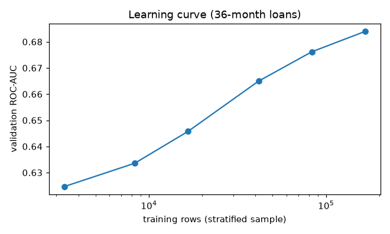
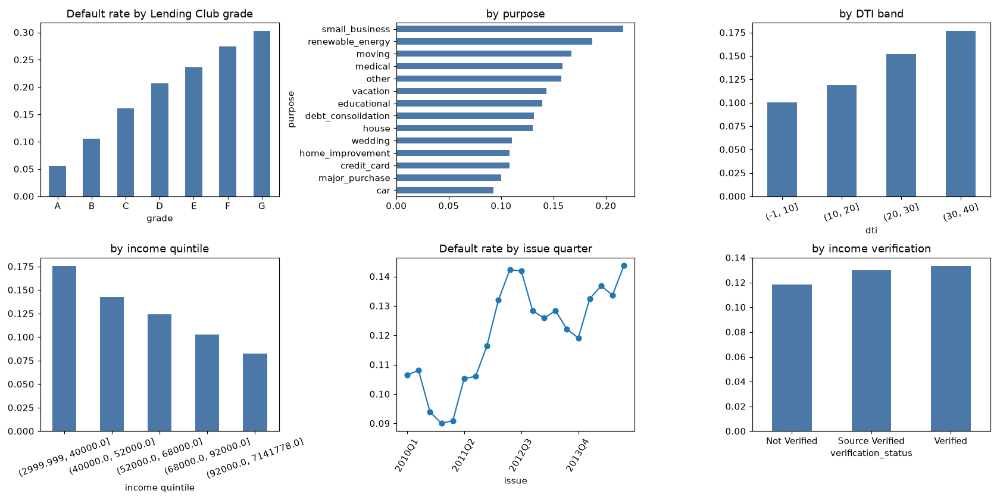
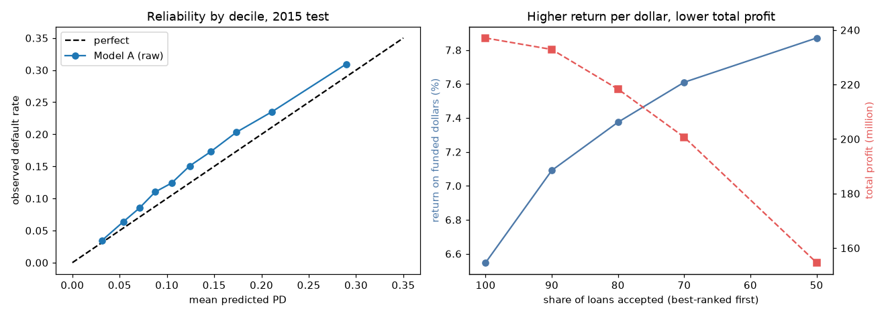

Which Lending Club loans will charge off?
A SEMMA project: Sample, Explore, Modify, Model, Assess. 2.26 million loans, 2007 to 2018. Use the arrow keys or scroll.
If you can rank borrowers by risk, can you make more money by declining the risky ones?
Extension 0: define success first
- Money measured with realized cash flows: total payments minus amount funded. Declined loans earn 0; undiscounted.
- Six pass/fail criteria (AUC, KS, calibration, profit, stability, fairness) written before modeling.
- SEMMA has no business or deployment stage: these are labelled extensions.
S: Sample

- 2,260,701 rows to 666,785 eligible loans.
- Keep only vintages that could have finished: 36-month loans issued by Dec 2015.
- Learning curve never flattens: use every training loan.
- Out-of-time test: all 282,787 loans of 2015, not sampled.
E: Explore

- Grade A 5.6% to G 30.3% default.
- The credit-bureau block exists only from 2013: missingness proxies the calendar.
- Borrower clusters are weak (silhouette at most 0.14).
M: Modify. 41 columns know the future
Audit of all 151 columns: 78 known at origination, 41 not.
| Post-origination column | Single-column AUC |
|---|
| recoveries | 0.934 |
| last_fico_range_high | 0.104 (= 0.896) |
| total_rec_prncp | 0.170 (= 0.830) |
ZIP code and state kept out of the model (fairness proxies). Grade and rate only in a comparison model.
M: Model
| Model (validation) | ROC-AUC |
|---|
| FICO only | 0.596 |
| Scorecard, application data | 0.664 |
| LightGBM, application + bureau (Model A) | 0.678 |
| LightGBM + Lending Club grade and rate (Model B) | 0.689 |
Pre-set rule picked Model A. Model B is a comparison only.
A: Assess, the 2015 test (once)
AUC 0.679
Pre-set target 0.68: missed by 0.0007. KS 0.260, Gini 0.359. Riskiest decile defaults 30.9% vs 3.4% for the safest.
| C1 | C2 | C3 | C4 | C5 | C6 |
|---|
| fail | pass | fail | pass, negligible | pass | flag |
The surprise: declining risky loans does not help

- Even the riskiest decile returned +1.3%: rates already price risk.
- Best half: return 6.6% to 7.9%, but total profit $237M to $155M.
- The model under-predicts 2015 (12.9% vs 14.9%).
Fairness and limits
- Strict decline-20% policy: lowest income quartile approved at 63% of the top quartile's rate (follows real risk, still needs justification).
- No protected-attribute data: slice and proxy analysis only.
- Within-grade discrimination is weak (AUC 0.57 to 0.64).
- SAS was not available: no SAS flow; a SAS score-code export was generated and not run.
Extension: deployment and lessons
- Batch scoring with input validation, checked against the notebook; monitoring that fires on the same calibration gap.
- Use it for pricing and limits, not as a stand-alone decline rule.
- Two AI roles (draft, review) caught that I called the test "sealed" after seeing its aggregate default rate (it is held out, not sealed), outcome-based test sampling and a KS tie bug.
- Next time: tune on return per dollar, calibrate on the latest mature vintage, apply for SAS in week one.